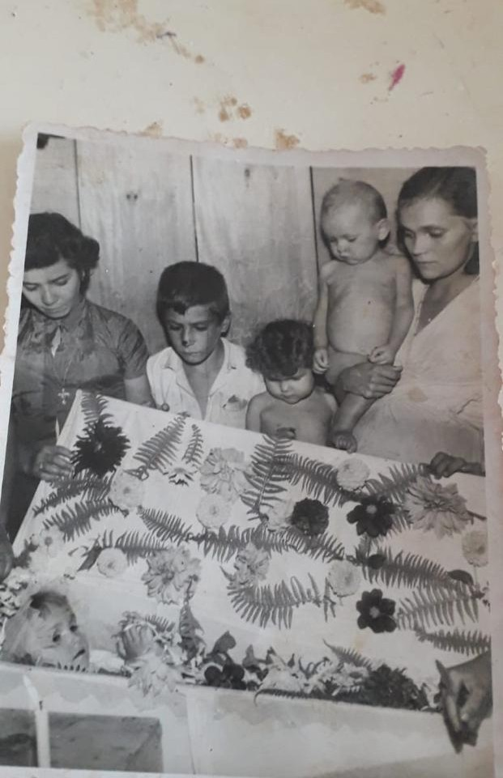
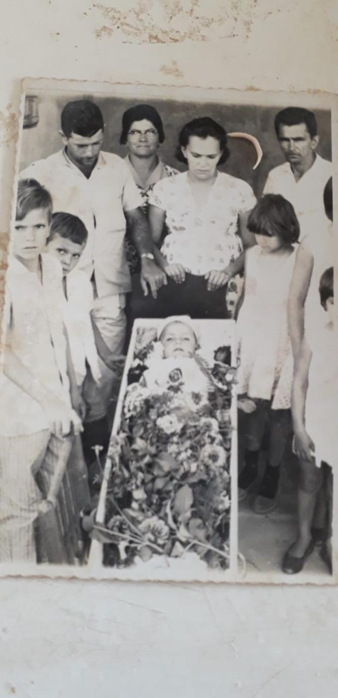
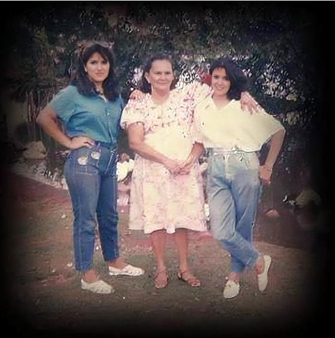
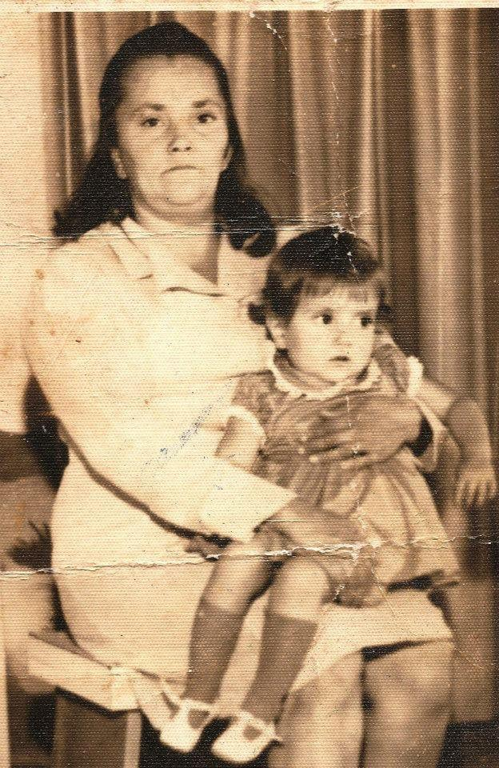
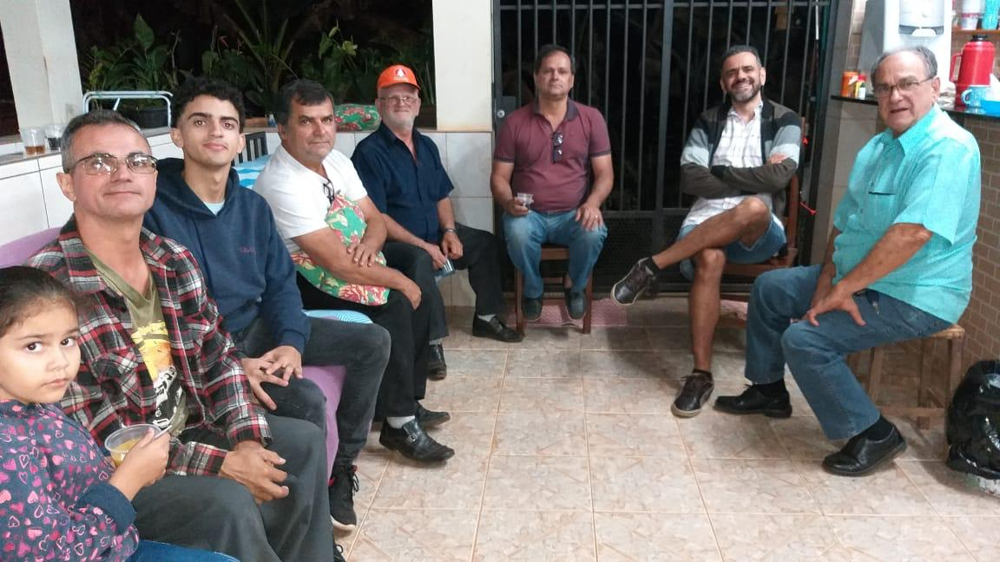
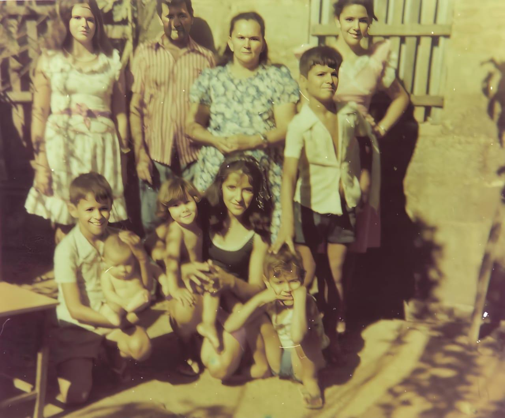
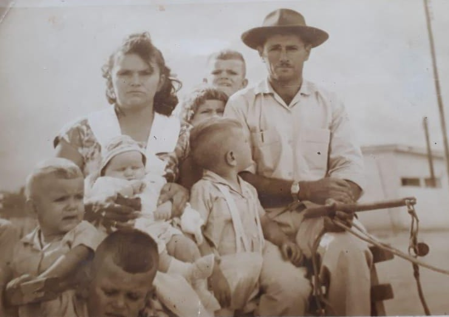

Antônio Teles de Menezes e Edite Maria de Jesus
Memória, origem e história de uma família
Uma trajetória marcada por fé, luta, amor e união ao longo das gerações.
Antônio Teles de Menezes e Edite Maria de Jesus
Um registro de memória, origem e história da família.
Segundo a história contada por meus pais, descendentes de imigrantes dos Países Baixos e de Portugal, e também com base em pesquisas que realizei em cartórios e paróquias, nossos antepassados chegaram ao Brasil por volta do final do século XVIII.
Eles desembarcaram principalmente nos portos do Ceará e de Pernambuco. Naquele período, Portugal incentivava a ocupação de suas colônias, motivado tanto por interesses econômicos quanto pelas instabilidades do seu tempo.
A Holanda também disputou espaço na região Nordeste, especialmente por causa da produção de açúcar, extremamente valiosa na época.
A realidade encontrada, porém, era dura: calor intenso, seca, longas distâncias, falta de estrutura e enorme dificuldade de sobrevivência.
Ao longo do tempo, houve grande miscigenação entre portugueses, holandeses e povos indígenas da região, formando o povo sertanejo, forte, resistente e profundamente adaptado ao ambiente.
É nesse contexto que se inicia a trajetória da família Menezes e Teles, da qual faço parte.
Naquela época, por volta do século XVIII, desembarcaram nos portos de Pernambuco e do Ceará os primeiros membros das famílias que dariam origem aos Menezes e aos Teles.
A população da então vila de Fortaleza era pequena, e todo o Ceará contava com um número reduzido de habitantes. Essa população era formada principalmente por povos indígenas de diversas etnias, como Jê, Tupi, Cariri, entre outras, que ao longo do tempo se misturaram com os colonizadores europeus.
Dessa miscigenação nasceu o perfil do povo sertanejo: resistente, adaptado ao clima seco e às dificuldades da região.
No meu caso, trago essa mistura na própria formação da minha família. Pelo lado do meu pai, há descendência de portugueses e possivelmente holandeses. Já pelo lado da minha mãe, há forte presença indígena, especialmente da região da Serra da Ibiapaba, próxima à divisa com o Piauí.
Meus avós maternos tinham características marcantes: eram baixos, de pele morena, cabelos lisos e traços indígenas bem definidos. Minha mãe já apresentava uma tonalidade mais clara, resultado da miscigenação com portugueses.
Assim, minha origem é fruto da união de povos indígenas, portugueses e europeus, refletindo a própria formação do povo nordestino.
A vida no sertão nordestino era extremamente difícil. As famílias viviam com poucos recursos, enfrentando longos períodos de seca, escassez de alimentos e ausência quase total de infraestrutura.
O trabalho era pesado e começava desde cedo. Crianças cresciam ajudando os pais nas atividades do dia a dia, aprendendo a lidar com as dificuldades impostas pela natureza e pela falta de oportunidades.
A fome era uma realidade constante para muitas famílias. Nem sempre havia o que comer, e a sobrevivência dependia da resistência, da fé e da união entre todos.
Mesmo diante de tantas dificuldades, havia também solidariedade entre as pessoas. Os vizinhos se ajudavam, compartilhavam o pouco que tinham e enfrentavam juntos os desafios da vida.
Foi nesse ambiente de luta e superação que meus pais cresceram, formando valores que carregaram por toda a vida: o respeito, a dignidade, o trabalho e o amor à família.
Meus pais

Morte da minha irmã Áurea

Morte do meu irmão Alfredo

Eu, minha mãe e minha irmã Fátima

Eu e minha mãe

Filhos, netos e uma bisneta

Família

Família no sertão
Chegada dos antepassados ao Brasil, principalmente nos portos do Ceará e Pernambuco.
Formação das primeiras gerações da família no sertão nordestino, com forte miscigenação entre indígenas e europeus.
Consolidação da família na região, enfrentando as dificuldades do clima e da vida no sertão.
Migração da família para Brasília em busca de melhores condições de vida.
Construção da família, crescimento dos filhos e fortalecimento dos laços familiares.
Preservação da história da família através deste site.